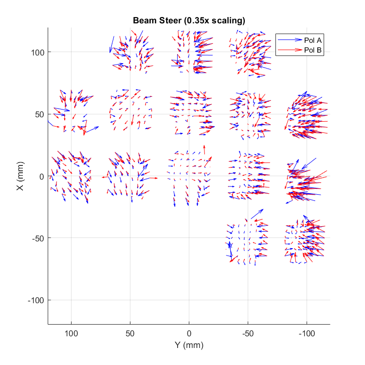

This posting follows in presenting estimates various metrics from near field beam maps particularly for BICEP3 data. These
parameters are not only useful in tracking systematics at the focal plane level, but we also want to try to connect
these to deprojected residuals and eventually resulting B-mode power. This posting goes more in depth on the model used to derive the location of the aperture WRT the telescope boresight. I also present updated results for beam steer using new gaussian fits as well as a comparison of measured edge tapers to Paul Grimes' GRASP simulations of near field power.
Definition of Metrics
Beam Steer
Thickness variation in the intermediate layer between the Niobium groundplane and microstrip lines can create a
phase gradient in the summing network. This phase gradient manifests as an angular offset from the direction
normal to the focal plane of the beam trajectory coming out of the antenna feed. As projected onto the plane of
the aperture, the offset trajectory would look like a translation of the beam center from the aperture center in
near field beam maps. Thus, we define beam steer as the offset between the beam center and aperture
center.
Edge Taper
In our instrumental designs, we configure the optics with a specific target for edge taper in mind. Estimating
the minimum, maximum, and azimuthal average edge taper tells us how we compare to the as-designed values. The
"edge" is determined by defining an annulus within which we calculate the taper parameters. The outer
boundary of the edge is defined by the aperture diameter and the inner boundary is arbitrarily selected to
be N% smaller than the aperture diameter. For the figures below, I've set the inner boundary to be 10%
of the aperture diameter.
Procedure
We mostly follow the procedure historically done in but we list it here explicitly
for clarity:
Determine the location of the aperture in the beam map coordinate system.
This is accomplished by stacking multiple maps and shifting/rotating until we can identifying a
sharp truncation in amplitude from the aperture.
Fit Gaussian profiles to per-detector beams.
In my previous posting , I used parameter estimates on the beams that we done as
part of the reduction pipeline. In this posting, I fit each beam to a 4-parameter symmetrical
Gaussian, masking out all data beyond a 150mm radius around the apparent aperture center of each
detector.
Subtract aperture center from as-fit beam center to get the beam steer.
Determine apparent size of the aperture.
In the coadded map, it is easy to see the sharp cut off due to the aperture. As can be seen in the
figure below, the as-given illuminated aperture is notably larger than the apparent aperture. The
aperture diameter in this case was set by-eye at 483mm.
The shifted and coadded map for 8 good pixels with the physical aperture size overlaid on top. The
Given aperture size of 520mm is the listed BICEP3 "Illuminated Aperture" from the Telescope
& Instrument Parameters Doc. The Set aperture size is the by-eye setting of 483mm".
Calculate per-detector edge taper parameters based on aperture center, size, and margin.
Dataset
The dataset used in this posting comes from the Nov 2016 - Feb 2017 Calibration season, the maps for which can
be found in .
Aperture Modeling
Finding the Aperture
The apparent aperture center of each detector in the near-field beam map coordinate system,
($x_{apt},\,y_{apt}\,$), is calculated using four global parameters in conjunction with the ideal detector
pointings ($r,\,\theta\,$):
\begin{equation}
\begin{split}
&x_{apt} = d \tan(r)\sin(\theta+\phi)+x_{0}\\
&y_{apt} = d \tan(r)\cos(\theta+\phi)+y_{0}
\end{split}
\end{equation}
where $d$ is the distance from the aperture plane to the mapper plane, $\phi$ is the rotation of the mapper
WRT the boresight-centered coordinate system, and ($x_0,\,y_0$) is the offset from the origin of the mapper
to the center of the aperture.
These parameters are estimated using a background+mask model. In the real beam maps, I assume little-to-no
signal should exist beyond the aperture and that the aperture is symmetric. Thus, for a map with amplitude
$A(x,y)$ masking out the data within the radius of the aperture, $R_{apt}$, should result in a constant
background signal $A_{bg}$:
The maps from a few pixels (both A & B detectors) spread out across the focal plane are simultaneously fit
to the model above to estimate the parameters $\left(x_0,\,y_0,\,d,\,\phi,\,A_{bg}\right)$. The pager below
shows the masked maps. In the 'After Fit' plots, we can see that a single set of parameters adequately masks
all beams, leaving only a flat level of background noise. For the data used in this posting the best-fit
parameters are:
$x_0$ (mm)
$y_0$ (mm)
$d$ (mm)
$\phi$ (°)
$A_{bg}$ (mm)
18.0
38.7
535.7
16.2
0.55
Shifting the Maps
The coadded map is created by calculating the per-detector aperture positions using Eq. 1 with the best-fit
parameters of $\left(x_0,\,y_0,\,d,\,\phi\right)$ as inputs and then shifting the maps before coadding.
Fit: Maps of 8 good detectors across the focal plane masked over using the model described in EQ.
2 and the coadded maps for 8 whole pixels (center) after shifting using Eq. 1 and all zeros (Fit:
None) or the best-fit parameters (Fit: After) as inputs.
Shift: Maps of 8 good detectors across the focal plane and the coadded maps for 8 whole pixels
(center) before and after shifting.
Results
Beam Steer
Beam steer has been recalculated using the new 4-parameter beam fits.

Quiver plot of beam steer for A and B polarization RGL detectors in blue and
red respectively.
Edge Taper
Comparing Real NFBM's to GRASP Sims
In this section, I perform my edge taper analysis on Paul's GRASP simulations of near field power 20" (~410mm) from the aperture. In the pager below, I also provide four Pol A detectors that are relatively close in pointing to the the sims. In the plots below, the particular sims used were the co-polar field amplitudes in Main beam only/BICEP3_asBuilt_PO_withForebaffle_Nearfield_Grid_##.
By accounting for the distance to the mapper, the simulated edge tapers are now much closer to the measured edge taper, but the power roll off is much slower for the sims compared to the real data.